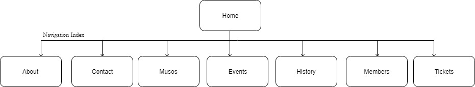

Members:
Any Business is driven by some sort of objective and goal. inorder to acheive such target i.e., Goal; we divide our objectives to support completion of our goals.
Following are the goals of Townsville Community Music Centre,
1. User, Events and Ticket SalesAs website provides the ultimate booking experience without time limitation and iritation of staying in queue, providing ease to the user for booking as he/she is not needed physically at the ticket centre.
As the users who already signed up for membership will get the benefit with-resepect-to ticket bookings in events. But, users without the membership will also be targeted to increase the sales "pushing" them to subscribe our membership with fare "membership cost" and benefits. So this will increase the sales as the users with-respect-to converting them in to long term MEMBERS. 2. Targeted AudienceOur Targeted Audience is our Local People (Adults, Children, Men, Women) with the diversity based on their interest and performace by our beloved Artists.
1. The better way of evaluating success is comparison. First step of success evaluation is to measure number of people visiting our websites i.e., Unique Vistors.
2. The main reason of creating this website is to increase the sales activity which is directly dependent on the number of people signed up for Membership. Which can be compared with the number before website released and number of user after the release of website i.e., 3 month.
3. Another aspect of Success Evaluation is SALES. the number of tickets being sold before the website lauched and the number of tickets sold after website is launch (time period being 3 month). This comparison will give us the understanding "Success Evalution" with-respect-to tickets sale.
4.Every aspect we discussed largely depends upon our Audience. The final and main aspect being, did we reach the targeted audience?
a) as our target being diverse, how many children subscribed our membership before website and how many children we have now as members (time period being 3 month).
b) How many adults (Men and Women) subscribed our membership before website and how many adults we have now as members (time period being 3 month).
This defines our reach as community based music centre as our defined targeted Audience reached or not.
As being music centre with the sense of "Community", we specialize in diversity. That being said, Our community composed of wide range of styles and genres which is supported by variouse group of people.
As the genres being diversely presented, our audience also varies with them.
Our website needs a computer literate user which can simply go online and browse our website (infact, every online activity needs such literacy.)As part of design, our website follows a simple design which presents " Information" in a such manner that can be access from chidren to adults without any knowledge.
Our Home Page design presents all information in one place in brief; so that user will have better understanding about which page containts which information and also about every activities in brief.

Comps is a comprehensive dummy for the website. It is usually created before the layout goes to press or get released.
provide links here to your 2 comps (images or Web pages)
provide a link here to your developed pages
{kind=link}
{kind=link}